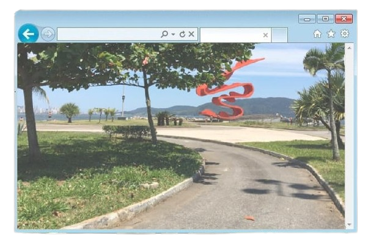
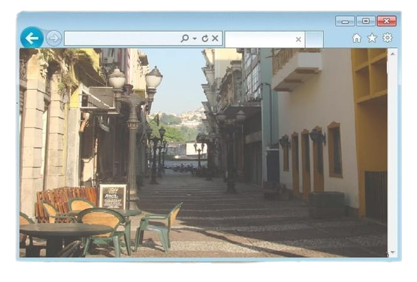

População: ~430 mil habitantes Localização: litoral de São Paulo (Baixada Santista) Bioma: Mata Atlântica Fundação: 1546 Aniversário: 26 de janeiro Característica: cidade portuária e turística br

Com a chegada dos portugueses no século XVI, Santos tornou-se um dos
principais núcleos de ocupação do litoral paulista, ligado diretamente
à fundação de São Vicente, considerada a primeira vila do Brasil.
Sua localização estratégica favoreceu o desenvolvimento do
porto, que passou a ter papel essencial no escoamento de produtos.
Ao longo dos séculos, o crescimento de Santos esteve fortemente ligado
à atividade portuária, especialmente durante o ciclo do café no século
XIX, quando o porto se tornou o principal ponto de exportação do
produto no país.
Esse período trouxe grande desenvolvimento econômico e urbano para a
cidade.
No século XX, Santos se consolidou como um importante centro urbano e
turístico, além de manter sua relevância econômica com o Porto de
Santos, o maior da América Latina.
Atualmente, a cidade é reconhecida por sua importância histórica,
econômica e cultural no Brasil.

Economia baseada no Porto de Santos, comércio e serviços Turismo
forte, com praias e atrações urbanas Importante centro econômico e
logístico Destaque para turismo histórico e cultural
População urbana com alto nível de desenvolvimento Bons indicadores
de qualidade de vida Forte atividade econômica gera empregos
Desafios urbanos comuns a grandes cidades
Localizada em ilha (Ilha de São Vicente) Presença de praias, morros
e manguezais Áreas de Mata Atlântica preservada Relevo com planícies
e morros
Porto de Santos (maior da América Latina) Centro histórico Museu do
Café Orla com jardins (uma das maiores do mundo)